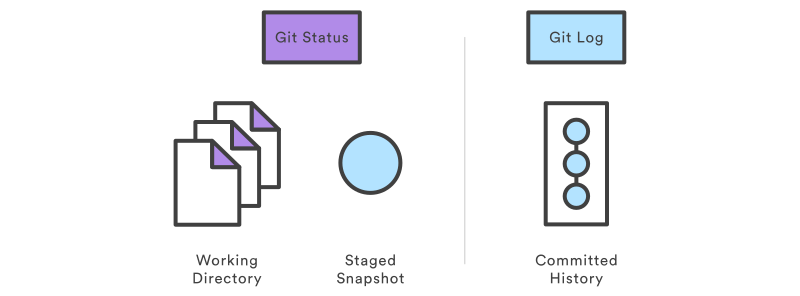

Inspecting a Repository with status, log
The lifecycle of the status of your files.

Status
$ git status
List which files are staged, unstaged, and untracked.
# Not currently on any branch.
# Changes to be committed:
# (use "git reset HEAD <file>..." to unstage)
#
# modified: index.md
# deleted: intro.md
#
# Untracked files:
# (use "git add <file>..." to include in what will be committed)
#
# history.md
# intro.md
.gitignore files
config file used to ignore machine generated binaries.
Placed at one of the places
1. Just go and add files ( pattern ) to be excluded with one pattern per line .git/info/exclude
2. .gitignore at the root folder of the project
Very useful command if you have already commited the entire directory.
$ git rm --cached <path>
$ git rm --cached app/runtime/application.log
Lots of useful gitignore templates
https://github.com/github/gitignore/
log

Display the entire commit history using the default formatting. If the output takes up more than one screen, you can use Space to scroll and q to exit.
$ git log -n <limit>
Limit the number of commits by
$ git log --pretty=oneline
$ git log --pretty=short
$ git log --pretty=full
$ git log --pretty=format:"%h - %an, %ar : %s"
This option changes the log output to formats other than the default. A few prebuilt options are available for you to use. The oneline option prints each commit on a single line, which is useful if you’re looking at a lot of commits In addition, the short, full, and fuller
More format available http://git-scm.com/book/en/v2/Git-Basics-Viewing-the-Commit-History
$ git log --oneline
Condense each commit to a single line. This is useful for getting a high-level overview of the project history.
git log --stat
Along with the ordinary git log information, include which files were altered and the relative number of lines that were added or deleted from each of them.
git log -p
Display the patch representing each commit. This shows the full diff of each commit, which is the most detailed view you can have of your project history.
git log --author="<pattern>"
Search for commits by a particular author. The
git log <since>..<until>
Show only commits that occur between
git log --graph --decorate --oneline
Fancy git log
git log --graph --pretty=format:'%Cred%h%Creset -%C(yellow)%d%Creset %s %Cgreen(%cr) %C(bold blue)<%an>%Creset'
# Make it git alias
Note
Author and Committer The author is the person who originally wrote the work, whereas the committer is the person who last applied the work. So, if you send in a patch to a project and one of the core members applies the patch, both of you get credit – you as the author, and the core member as the committer.